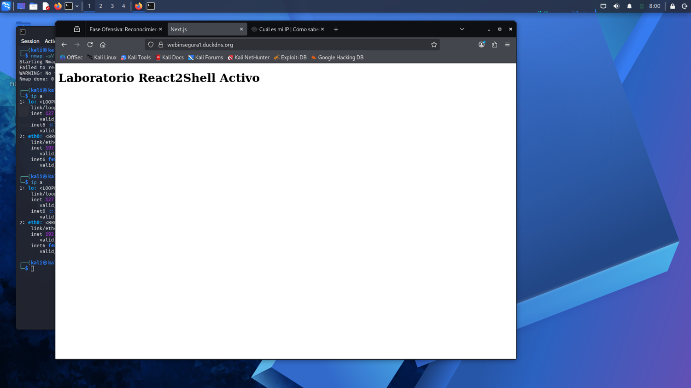
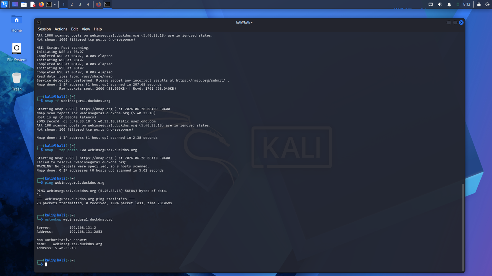
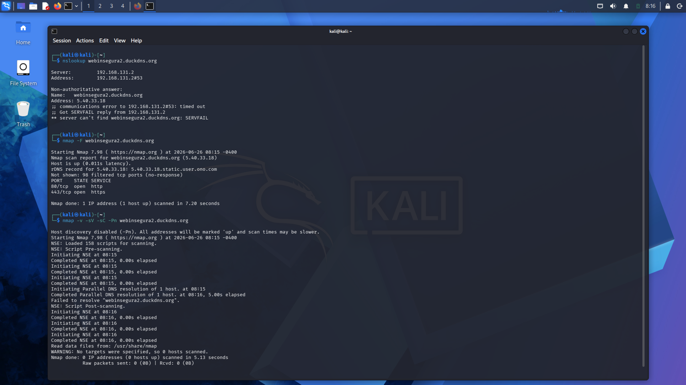
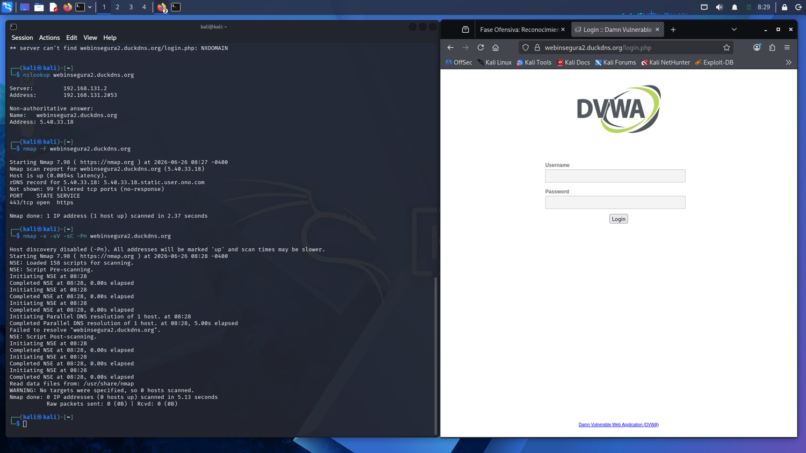
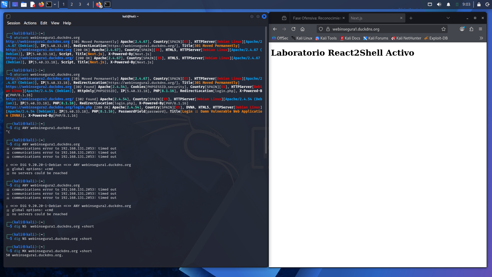
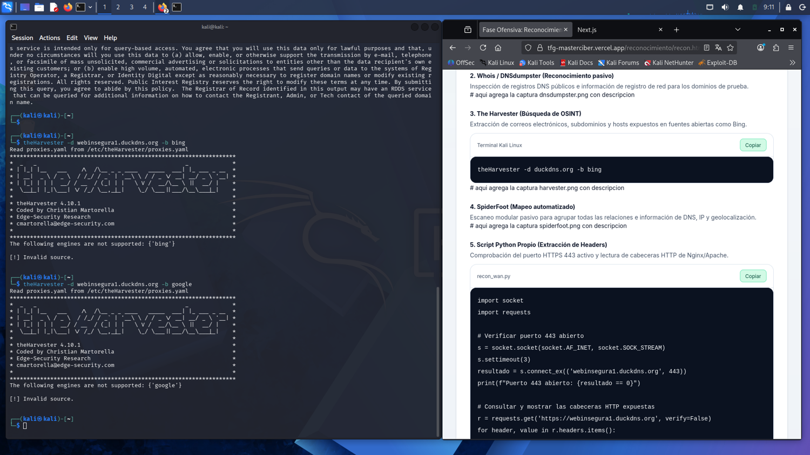
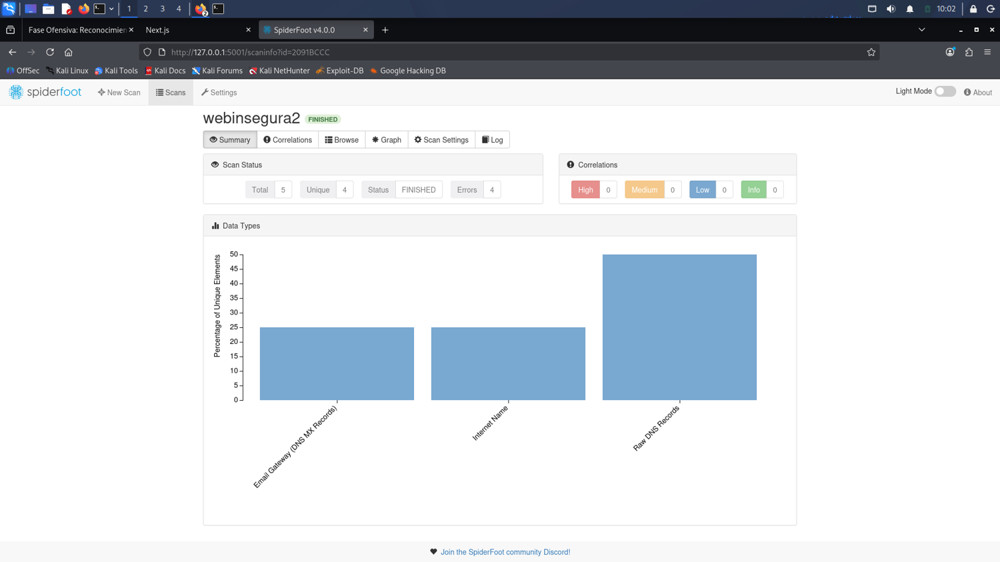
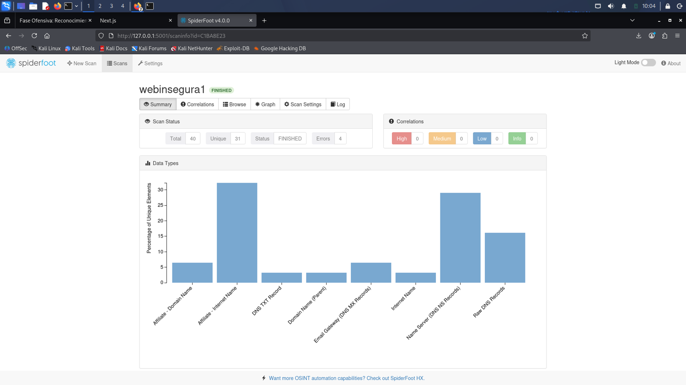
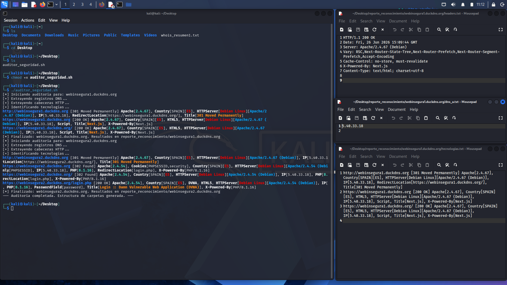
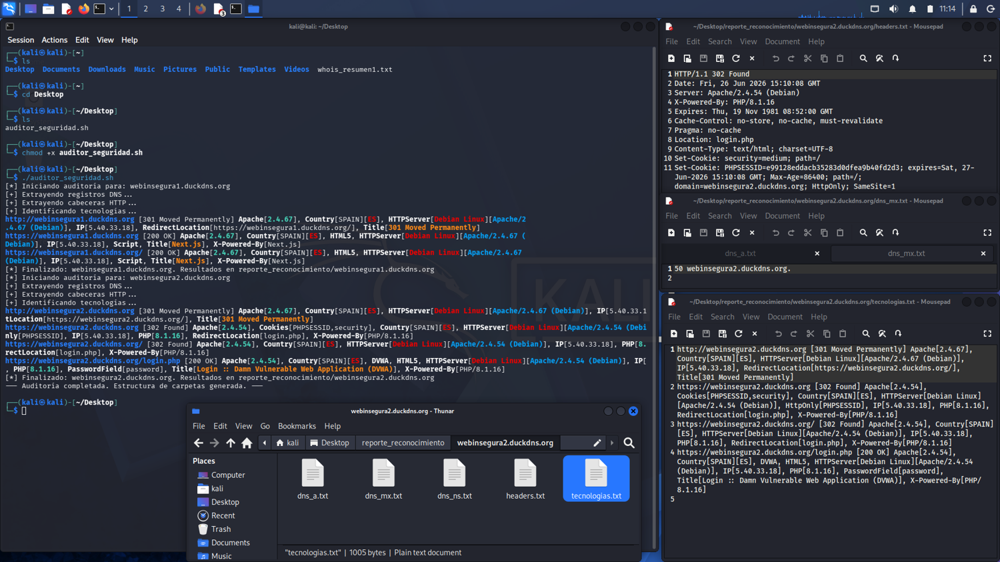

Reconocimiento Pasivo y Escaneo Perimetral
Este laboratorio documenta la fase inicial de reconocimiento pasivo y mapeo técnico perimetral contra la infraestructura del TFG. Se analiza la huella digital técnica y los límites del direccionamiento DDNS mediante Nmap, resolución DNS avanzada, WhatWeb, WHOIS, theHarvester y SpiderFoot.
🧪 Metodología de Mapeo Perimetral
La recolección de información se ha llevado a cabo de manera centralizada desde la estación de ataque Kali Linux, persiguiendo un flujo estructurado de recolección de huella digital y escaneo de puertos:
- Comprobaciones de red: Análisis previo de estabilidad del DNS con
nslookupy comprobación de ping. - Escaneo rápido (-F): Mapeo inicial de los 100 puertos TCP más habituales para discriminar la superficie de exposición inmediata.
- Escaneo detallado (-sV -sC -Pn): Determinación minuciosa de servicios, versiones y ejecución de scripts automatizados NSE.
- Sin descubrimiento de host (-Pn): Omisión del ping ICMP básico debido al filtrado perimetral por defecto en entornos de DDNS.
- Automatización: Implementación del script personalizado en Bash (
auditor_seguridad.sh) para agrupar las peticiones DNS (dig), la obtención de cabeceras seguras (curl) y la enumeración de tecnologías (WhatWeb).
Script de Automatización propio: auditor_seguridad.sh
#!/bin/bash
DOMINIOS=("webinsegura1.duckdns.org" "webinsegura2.duckdns.org")
DIR_SALIDA="reporte_reconocimiento"
mkdir -p $DIR_SALIDA
for DOMINIO in "${DOMINIOS[@]}"; do
echo "[*] Iniciando auditoría para: $DOMINIO"
CARPETA="$DIR_SALIDA/$DOMINIO"
mkdir -p $CARPETA
dig NS $DOMINIO +short > "$CARPETA/dns_ns.txt"
dig MX $DOMINIO +short > "$CARPETA/dns_mx.txt"
dig A $DOMINIO +short > "$CARPETA/dns_a.txt"
curl -I -s -k "https://$DOMINIO" > "$CARPETA/headers.txt"
whatweb "$DOMINIO" --log-brief="$CARPETA/tecnologias.txt"
echo "[*] Finalizado: $DOMINIO"
done🟦 Análisis de webinsegura1.duckdns.org
Máquina correspondiente al backend y la aplicación moderna (React2Shell en Next.js).
1.1 Resolución DNS e ICMP Ping
Verificación inicial mediante nslookup para confirmar la IP asignada por DuckDNS y prueba de disponibilidad directa.

Captura 1: Consulta nslookup exitosa hacia la IP de laboratorio y ping fallido con 100% de pérdida.
Pérdida de Paquetes en Ping: El comando ping hacia webinsegura1.duckdns.org devuelve 100% packet loss. Esto ocurre debido a que la infraestructura WAN del host de destino o los enrutadores intermedios descartan de forma estática los paquetes ICMP Echo Request. Se hace imprescindible utilizar el parámetro -Pn en los escaneos de Nmap para forzar el análisis de puertos considerando que el host está activo.
1.2 Escaneo rápido (-F)
Evaluación rápida de la lista reducida de puertos TCP comunes.
nmap -F -Pn webinsegura1.duckdns.org
Captura 2: Resultado de Nmap rápido con todos los puertos TCP comunes filtrados.
Puertos filtrados (no-response): Todos los puertos del escaneo rápido devuelven estado filtered. Esto revela que existe un firewall activo que está descartando de manera silenciosa las tramas TCP SYN, impidiendo determinar si los puertos están abiertos mediante escaneos superficiales.
1.3 Escaneo Completo (-sV -sC -Pn)
Análisis profundo sobre los 1000 puertos TCP por defecto para identificar posibles servicios alternativos o puertos específicos.
nmap -sV -sC -Pn webinsegura1.duckdns.org
Captura 3: Salida del escaneo detallado confirmando la inexistencia de puertos expuestos públicamente.
Bloqueo Perimetral Total: El escaneo profundo confirma que los 1000 puertos analizados están bajo la clasificación de filtered (no-response). El host está activo en la IP resuelta, pero no expone ningún puerto al exterior bajo este subdominio específico en el momento de la auditoría.
🟩 Análisis de webinsegura2.duckdns.org
Máquina correspondiente al entorno vulnerable DVWA expuesto sobre el servidor Apache.
2.1 Resolución DNS
Comprobación del estado del dominio webinsegura2 para contrastar la IP y asegurar resolución correcta antes del análisis de puertos.

Captura 4: Terminal indicando resolución estable de webinsegura2 apuntando a la misma dirección IP pública.
2.2 Escaneo rápido (-F)
Escaneo superficial de los puertos TCP más frecuentes en la máquina DVWA.
nmap -F -Pn webinsegura2.duckdns.org
Captura 5: Detección de puerto 443/tcp (HTTPS) en estado OPEN, mientras que el resto permanece filtrado.
Cierre del Puerto 80 (HTTP): A diferencia de previas configuraciones del laboratorio donde el puerto 80 estaba accesible, en esta fase el puerto 80 aparece como filtered. Esto se debe a la aplicación del bloqueo perimetral específico y a la obligatoriedad del tráfico cifrado en HTTPS (puerto 443).
2.3 Escaneo Completo e Interrupción de Resolución
Lanzamiento del escaneo de firmas de servicios y scripts vulnerables sobre la máquina DVWA.

Captura 6: Error de Nmap al fallar la resolución DNS intermedia de webinsegura2.
Fallo Crítico de Resolución DNS en Ejecución: Nmap detuvo su ejecución con el error Failed to resolve "webinsegura2.duckdns.org". WARNING: No targets were specified. A pesar de que la resolución DNS inicial con nslookup fue satisfactoria, los servidores de DuckDNS sufrieron una caída temporal de servicio o denegaron las peticiones sucesivas originadas por la alta tasa de consultas de Nmap, impidiendo al escáner obtener la dirección IP del objetivo.
2.4 Confirmación de Servicio HTTPS Activo
Acceso a la interfaz web para verificar que el servidor Apache está sirviendo DVWA adecuadamente a través del canal seguro cifrado.

Captura: Interfaz de autenticación de Damn Vulnerable Web Application accesible en https://webinsegura2.duckdns.org/login.php.
🔍 WhatWeb y Consultas DIG
Fingerprinting del servidor HTTP y análisis estructural de registros DNS directos.
3.1 WhatWeb — Tecnologías y Cabeceras
WhatWeb ha revelado de forma pasiva la pila de componentes sobre la que corre cada sitio web:
| Dominio de Prueba | Tecnologías Identificadas | Cabeceras Relevantes | Comportamiento Inicial |
|---|---|---|---|
| webinsegura1.duckdns.org | Apache 2.4.67 (Debian), Next.js Framework | X-Powered-By: Next.js | Redirección 301 (HTTP a HTTPS) |
| webinsegura2.duckdns.org | Apache 2.4.54 (Debian), PHP 8.1.16, DVWA App | PHPSESSID, security (cookies) | Redirección 302 (HTTP a login.php) |
3.2 DIG — Consulta de Registros de Zona
Se ejecutaron comandos estructurados en DIG para auditar la presencia de delegaciones internas y registros específicos (ANY, NS, MX, TXT, A).
| Registro | Resultado de la Consulta | Causa Técnica / Interpretación |
|---|---|---|
| dig ANY | Fallo (no servers could be reached) | El servicio DuckDNS deniega por completo las peticiones ANY para mitigar ataques de amplificación DNS. |
| dig NS | Vacío (No DATA) | No existe delegación de servidores de nombres en subdominios dinámicos individuales. Solo la raíz posee NS. |
| dig MX | 50 webinsegura1.duckdns.org. | DuckDNS genera un MX genérico apuntando al propio subdominio, aunque no exista un servicio SMTP funcional en la máquina. |
| dig A | 5.40.33.18 | Devuelve con éxito la dirección IP pública del enrutador donde se aloja el laboratorio. |
Fallo en dig ANY: La petición DNS del tipo ANY al DNS dinámico de DuckDNS retorna errores o denegaciones persistentes. Los proveedores de DNS dinámico protegen sus servidores DNS autoritativos bloqueando este tipo de consultas masivas.
📌 WHOIS y theHarvester
Análisis de la información de titularidad pública y auditoría de metadatos/direcciones indexadas.
4.1 WHOIS — Error de Solicitud en Subdominios
Se intentó registrar la titularidad o la geolocalización administrativa del dominio a través de WHOIS clásico.
whois webinsegura1.duckdns.orgError de WHOIS — Malformed Request: El servidor WHOIS del TLD `.org` responde con un error Malformed request o No match. La estructura DNS de DuckDNS no genera registros WHOIS individuales para los subdominios de sus usuarios. Toda consulta WHOIS debe realizarse estrictamente contra el dominio raíz duckdns.org, que revela la titularidad genérica del servicio mas no del host del laboratorio.
4.2 theHarvester — Limitación de OSINT en Motores de Búsqueda
Intento de enumerar correos electrónicos corporativos, subdominios adicionales e IPs expuestas en fuentes indexadas de Google y Bing.

Captura 7: Comando theHarvester en ejecución retornando 0 resultados o "Invalid source" en consultas pasivas.
Ausencia de Trazas Indexadas: Las consultas automatizadas a buscadores no reportan ninguna dirección de correo ni subdominios relacionados. Dado que los subdominios dinámicos no forman parte de una empresa con presencia web corporativa, los rastreadores de Google y Bing no tienen metadatos, foros ni listas indexadas de los mismos, haciendo inviable la obtención de información útil por OSINT.
🟪 SpiderFoot — Comparativa de Exposición de Nodos
Análisis automatizado pasivo de la superficie digital a través de correlación de fuentes abiertas.
5.1 Análisis Comparativo de Superficie Técnica (5 vs 40 Nodos)
Se implementó una comparación tabular de la densidad de nodos obtenidos de forma pasiva por SpiderFoot entre ambas configuraciones web para contrastar la visibilidad de cada una de ellas:
| Entorno Objetivo | Nodos Detectados | Naturaleza de los Nodos | Conclusión de Exposición |
|---|---|---|---|
| webinsegura2 (DVWA) | 5 Nodos | Registros MX, Internet Name (alias) y Raw DNS. | Entorno estático y aislado. Sin librerías externas ni referencias de JS complejas. Huella digital sumamente reducida. |
| webinsegura1 (Next.js) | 40 Nodos (31 Únicos) | Múltiples JS de soporte, metadatos, cookies de sesión, NS asociados al dominio raíz, y subdominios del proveedor DNS. | Arquitectura dinámica moderna. Expone metadatos de configuración, librerías del cliente y cabeceras que delatan su infraestructura interna. |
Se optó por una representación tabular en lugar de una gráfica debido a la alta densidad de nodos en el entorno Next.js, priorizando la claridad y la comparación directa de la superficie de exposición técnica frente a entornos minimalistas.
Escaneo de webinsegura2 (DVWA)

Captura 8: Grafo en SpiderFoot mostrando un número mínimo de elementos detectados (5).
Escaneo de webinsegura1 (Next.js)

Captura 9: Grafo denso en SpiderFoot correspondiente al entorno dinámico de Next.js (40).
Timeouts de Red en Módulos Spiderfoot: Durante el escaneo pasivo de ambos dominios, SpiderFoot registró alertas y fallas con mensajes del tipo Unable to SSL-connect... (timed out) y Failed to obtain DNS response (timed out). Esto corrobora la inestabilidad de resolución del servicio gratuito de DuckDNS cuando es sometido a peticiones paralelas originadas por el rastreo modular.
🟪 Auditoría automatizada con auditor_seguridad.sh
Automatización del reconocimiento pasivo y mapeo técnico perimetral.
Para complementar las fases de reconocimiento manual y semiautomático (Nmap, WhatWeb, DIG, SpiderFoot), se desarrolló y ejecutó un script propio en Bash denominado auditor_seguridad.sh. Este script se encarga de estructurar, agrupar y guardar de forma ordenada la información de registros DNS, cabeceras HTTP y el fingerprinting de WhatWeb en directorios individuales para cada dominio.
Descargar Script Directamente
Obtén el archivo script de Bash directamente del servidor local para Kali Linux.
6.1 Ejecución del script y guía paso a paso
El script se hizo ejecutable y se lanzó desde la consola de Kali Linux:
chmod +x auditor_seguridad.sh
./auditor_seguridad.sh
Captura 10: Ejecución del script en la consola de Kali, procesando de manera estructurada ambos objetivos.
6.2 Resultados generados para webinsegura1.duckdns.org
Se generó el directorio de salida reporte_reconocimiento/webinsegura1.duckdns.org/ conteniendo las siguientes evidencias:
✔️ dns_a.txt: Contiene la dirección IP resuelta: 5.40.33.18
✔️ headers.txt: Cabeceras HTTP extraídas del servidor web:
HTTP/1.1 200 OK Server: Apache/2.4.67 (Debian) X-Powered-By: Next.js Content-Type: text/html; charset=utf-8
✔️ tecnologias.txt: Mapeo directo de WhatWeb:
https://webinsegura1.duckdns.org [200 OK] Apache/2.4.67, Next.js, Debian Linux
6.3 Resultados generados para webinsegura2.duckdns.org
Se generó el directorio de salida reporte_reconocimiento/webinsegura2.duckdns.org/ conteniendo las siguientes evidencias:
✔️ dns_a.txt: IP pública resuelta: 5.40.33.18
✔️ dns_mx.txt: Registro de intercambio de correo: 50 webinsegura2.duckdns.org.
✔️ headers.txt: Cabeceras HTTP que revelan redirecciones y cookies de sesión activas:
HTTP/1.1 302 Found Server: Apache/2.4.54 (Debian) X-Powered-By: PHP/8.1.16 Set-Cookie: PHPSESSID=...
✔️ tecnologias.txt: Trazabilidad del flujo HTTP por WhatWeb:
1 https://webinsegura2.duckdns.org [301 Moved Permanently] Apache/2.4.67 2 https://webinsegura2.duckdns.org [302 Found] Apache/2.4.54, PHP/8.1.16 3 https://webinsegura2.duckdns.org/login.php [200 OK] DVWA, HTML5

Captura 11: Editor visual con la estructura jerárquica y el contenido de los archivos generados para webinsegura1 y webinsegura2.
6.4 Conclusión de la auditoría automatizada
El script auditor_seguridad.sh automatiza la recolección de información clave de reconocimiento pasivo, generando un reporte limpio, ordenado y homogéneo. Los hallazgos reafirman que ambos objetivos comparten la misma IP pública (5.40.33.18), exponen servidores web Apache bajo Debian Linux y diferencian perfectamente las aplicaciones Next.js en webinsegura1 y DVWA en webinsegura2.